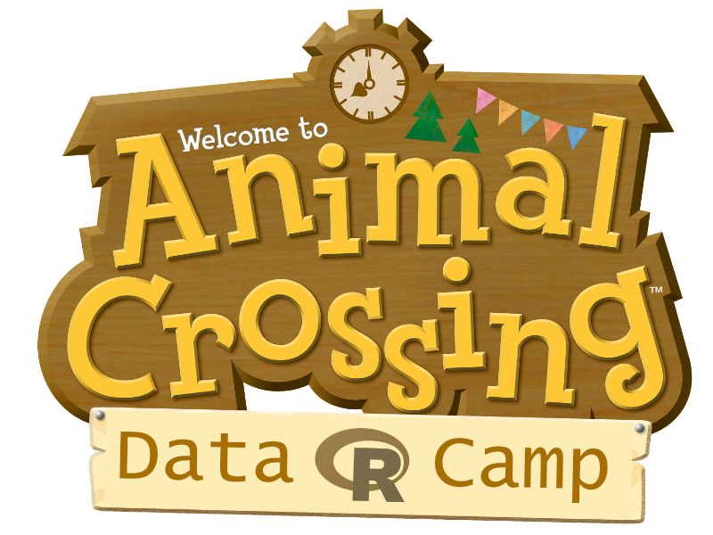

Everything related to Animal Crossing belongs to its original owners. These posts are purely for educational and entertainment purposes for fans of the series.
Welcome to the first in a series of posts exploring some beginner level data science in R using data from the Animal Crossing series. This series is intended to help people new to data analysis and statistics cover some easy to use ways of exploring and analysing data, through the medium of cute animals.
However, this series is not intended for complete beginners. While many things will be very basic, I’m going to assume you know some of the fundamentals and have been learning R from some other, more general, source. For example, I’m going to assume you have successfully installed R and Rstudio on your computer. I’m also going to assume you can do or know of the following:
#<- or =There are many fantastic resources available for learning these basics. I would personally recommend Garrett Grolemund and Hadley Wickham’s R for Data Science.
With that said, let’s jump in…
If you want to follow along, start by creating a new R project and R script file for the Animal Crossing data camp in Rstudio.